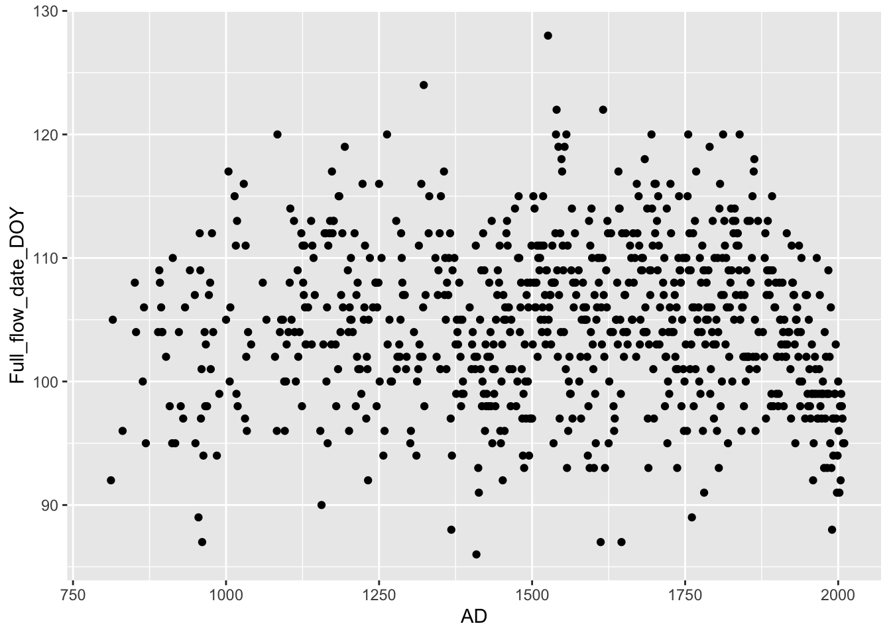
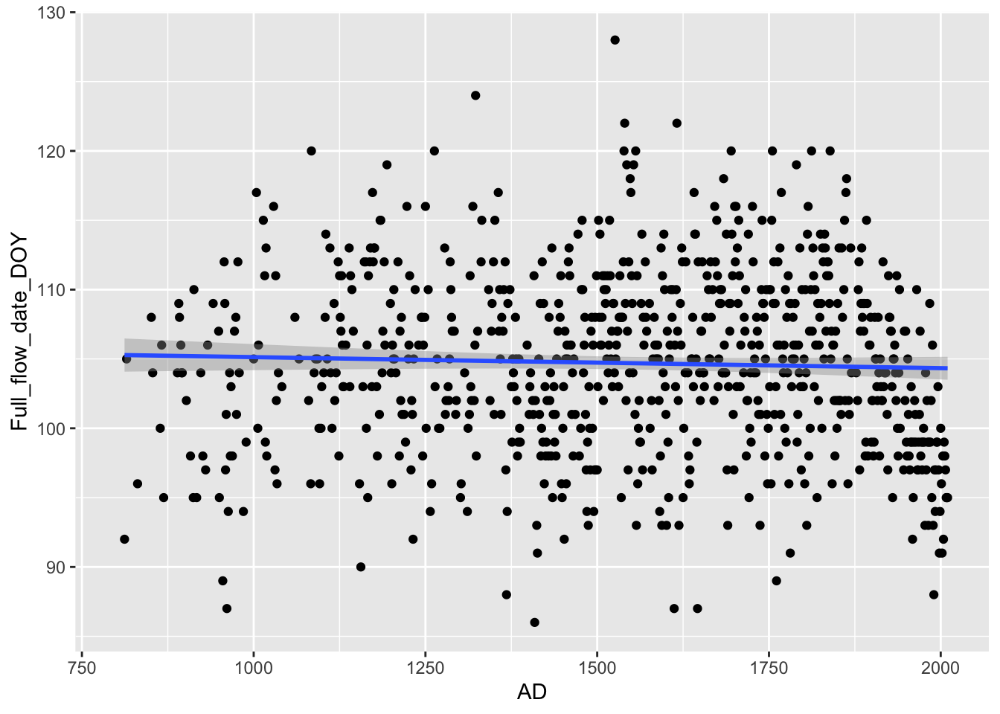
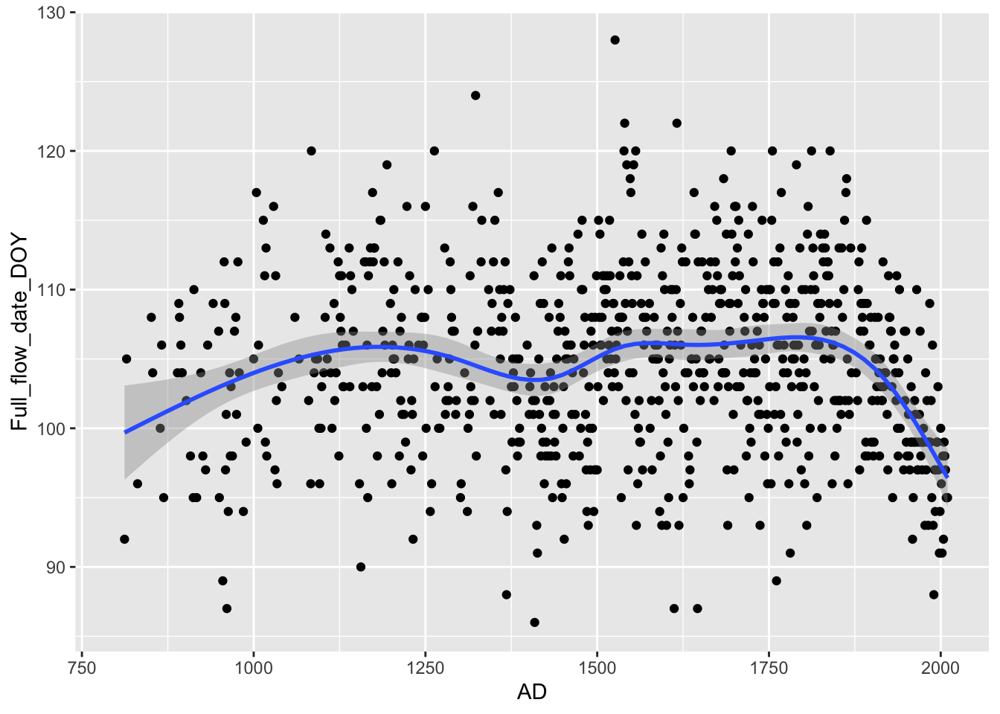
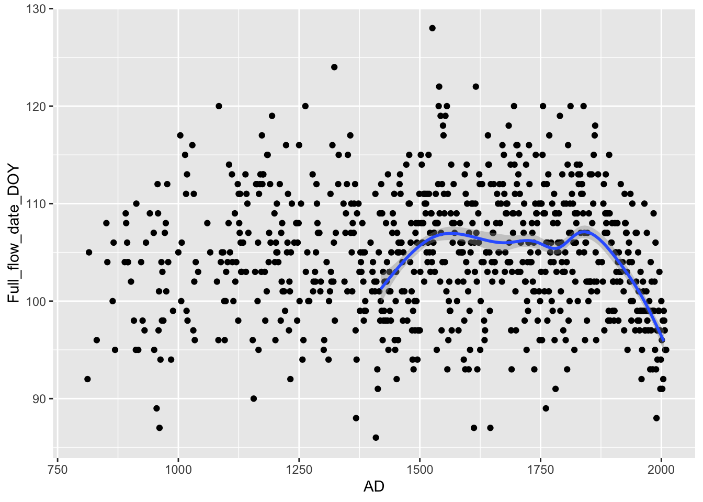
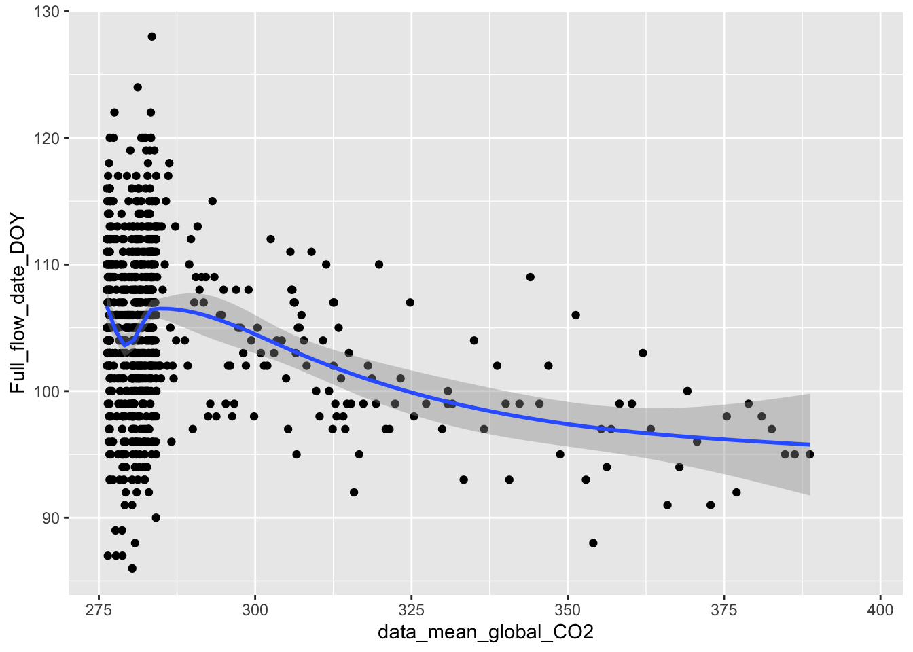
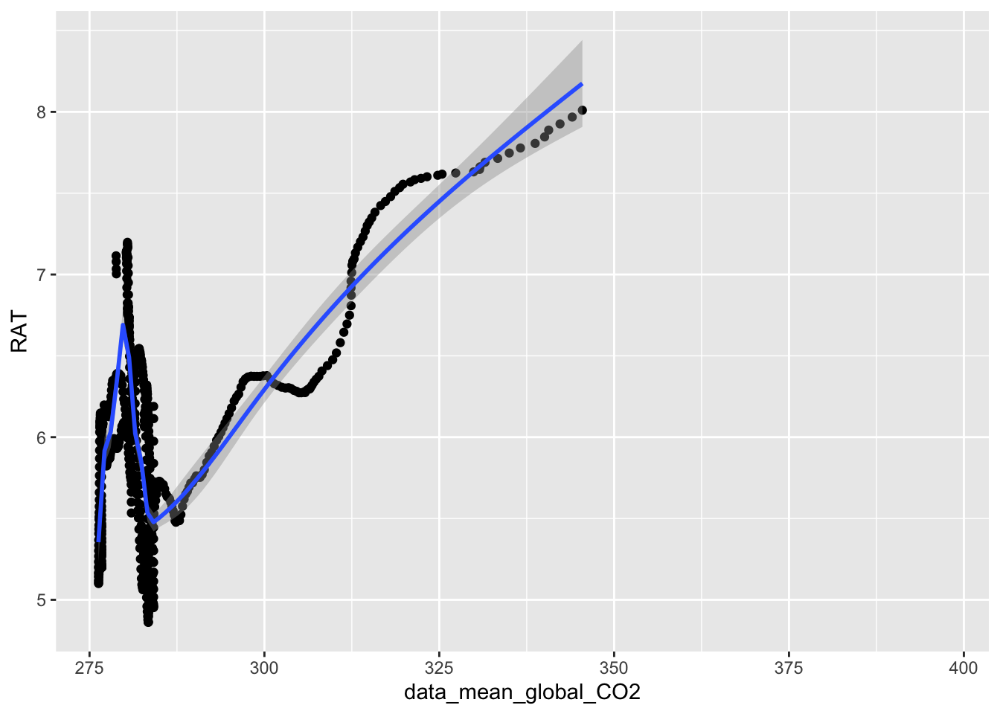

https://edition.cnn.com/2021/04/05/asia/japan-cherry-blossoms-climate-change-intl-hnk-scn/index.html
library(tidyverse)## ── Attaching packages ─────────────────────────────────────── tidyverse 1.3.0 ──## ✓ ggplot2 3.3.3 ✓ purrr 0.3.4
## ✓ tibble 3.1.0 ✓ dplyr 1.0.5
## ✓ tidyr 1.1.3 ✓ stringr 1.4.0
## ✓ readr 1.4.0 ✓ forcats 0.5.1## ── Conflicts ────────────────────────────────────────── tidyverse_conflicts() ──
## x dplyr::filter() masks stats::filter()
## x dplyr::lag() masks stats::lag()See the following link for an analysis of the time of blossom of the Cherry Blossom trees in Tokyo, Japan from year 801 to this year.
The objective of this excecise to to put in practice the functions different files and try and replicate some of the figures that have been published in newspapers.
See the following websites 1. https://edition.cnn.com/2021/04/05/asia/japan-cherry-blossoms-climate-change-intl-hnk-scn/index.html
https://www.yahoo.com/gma/numbers-japan-cherry-blossoms-hit-214535221.html
You will find 4 original files from the authors with the references, ect.
Load files in a RMarkdown document (make certain they are readible)
Merge all three file in one file, “show script and the last 6 lines” (make it clean, remove unnessary information, not the rows but the unnessary columns) a. Show the names of tghe columns in the new dataframe
Replace all -999.9 and -99.9 with NA within R. (Do not do this in Excel, show the script): a. show the head and tail of the new data frame.
Use the following website to find an appropriate script https://cran.r-project.org/web/packages/naniar/vignettes/replace-with-na.html
Using the mean “running average of the day of blossom” you calculated above. Use 10 year running average. a. Now plot the the rolling average of Blossom Day (10 year average) on your graph. b. Porque la linea no se extiende antes del año 1300? comparando al step 7.
Join the file with the CO2 data and do an analysis to evaluate the relationship between Average temperature in Tokyo and average CO2 (Rolling average of 10 years).
Explain how your hypothesis and how this may support or not evidence for climate change
library(readr)
X759TempW_mod <- read_csv("Cherry_Blossom/759TempW_mod.csv")##
## ── Column specification ────────────────────────────────────────────────────────
## cols(
## AD = col_double(),
## TEMP = col_double(),
## Obs_Temp = col_double()
## )F1=X759TempW_mod
head(F1)## # A tibble: 6 x 3
## AD TEMP Obs_Temp
## <dbl> <dbl> <dbl>
## 1 801 -999. -999.
## 2 802 -999. -999.
## 3 803 -999. -999.
## 4 804 -999. -999.
## 5 805 -999. -999.
## 6 806 -999. -999.KyotoFullFlowerW_mod <- read_csv("Cherry_Blossom/KyotoFullFlowerW_mod.csv")##
## ── Column specification ────────────────────────────────────────────────────────
## cols(
## AD = col_double(),
## Full_flow_date_DOY = col_double(),
## Full_flowering_date = col_double(),
## Source_code = col_double(),
## Reference_Name = col_character()
## )## Warning: 7 parsing failures.
## row col expected actual file
## 1213 AD a double Source code 'Cherry_Blossom/KyotoFullFlowerW_mod.csv'
## 1214 AD no trailing characters 1; Reported by Taguchi (1939), J. Marine Meteorol. Soc. (Umi to Sora), 19, 217-227 'Cherry_Blossom/KyotoFullFlowerW_mod.csv'
## 1215 AD no trailing characters 2; Added by Sekiguchi (1969), Tokyo Geography Papers, 13, 175-190. 'Cherry_Blossom/KyotoFullFlowerW_mod.csv'
## 1216 AD no trailing characters 3; Found and analyzed by Aono and Omoto (1994), J. Agric. Meteorol., 49, 263-272. 'Cherry_Blossom/KyotoFullFlowerW_mod.csv'
## 1217 AD no trailing characters 4; Found and analyzed by Aono and Kazui (2008), Int. J. Climatol., 28, 905-914 (doi: 10.1002/joc.1594). 'Cherry_Blossom/KyotoFullFlowerW_mod.csv'
## .... ... ...................... ....................................................................................................... .........................................
## See problems(...) for more details.F2=KyotoFullFlowerW_mod
head(F2)## # A tibble: 6 x 5
## AD Full_flow_date_DOY Full_flowering_date Source_code Reference_Name
## <dbl> <dbl> <dbl> <dbl> <chr>
## 1 801 NA NA NA -
## 2 802 NA NA NA -
## 3 803 NA NA NA -
## 4 804 NA NA NA -
## 5 805 NA NA NA -
## 6 806 NA NA NA -TempReconstWFinal_mod <- read_csv("Cherry_Blossom/TempReconstWFinal_mod.csv")## Warning: Duplicated column names deduplicated: 'Temp_3_31' => 'Temp_3_31_1' [3]##
## ── Column specification ────────────────────────────────────────────────────────
## cols(
## AD = col_double(),
## Temp_3_31 = col_double(),
## Temp_3_31_1 = col_double(),
## TemP_3_22 = col_double(),
## Actual_Temp = col_logical(),
## Urban_Effect_31 = col_logical(),
## Conf_CI_low = col_double(),
## Conf_CI_High = col_double()
## )## Warning: 185 parsing failures.
## row col expected actual file
## 1096 Actual_Temp 1/0/T/F/TRUE/FALSE 6.16 'Cherry_Blossom/TempReconstWFinal_mod.csv'
## 1097 Actual_Temp 1/0/T/F/TRUE/FALSE 6.24 'Cherry_Blossom/TempReconstWFinal_mod.csv'
## 1098 Actual_Temp 1/0/T/F/TRUE/FALSE 6.21 'Cherry_Blossom/TempReconstWFinal_mod.csv'
## 1099 Actual_Temp 1/0/T/F/TRUE/FALSE 6.32 'Cherry_Blossom/TempReconstWFinal_mod.csv'
## 1100 Actual_Temp 1/0/T/F/TRUE/FALSE 6.31 'Cherry_Blossom/TempReconstWFinal_mod.csv'
## .... ........... .................. ...... ..........................................
## See problems(...) for more details.F3=TempReconstWFinal_mod
head(F3)## # A tibble: 6 x 8
## AD Temp_3_31 Temp_3_31_1 TemP_3_22 Actual_Temp Urban_Effect_31 Conf_CI_low
## <dbl> <dbl> <dbl> <dbl> <lgl> <lgl> <dbl>
## 1 801 -100. -100. -100. NA NA -100.
## 2 802 -100. -100. -100. NA NA -100.
## 3 803 -100. -100. -100. NA NA -100.
## 4 804 -100. -100. -100. NA NA -100.
## 5 805 -100. -100. -100. NA NA -100.
## 6 806 -100. -100. -100. NA NA -100.
## # … with 1 more variable: Conf_CI_High <dbl>Join the three files and show the head and tail of the new data frame
Cherry_B=F1 %>%
full_join(F2) %>%
full_join(F3)## Joining, by = "AD"
## Joining, by = "AD"Cherry_B## # A tibble: 1,309 x 14
## AD TEMP Obs_Temp Full_flow_date_DOY Full_flowering_date Source_code
## <dbl> <dbl> <dbl> <dbl> <dbl> <dbl>
## 1 801 -999. -999. NA NA NA
## 2 802 -999. -999. NA NA NA
## 3 803 -999. -999. NA NA NA
## 4 804 -999. -999. NA NA NA
## 5 805 -999. -999. NA NA NA
## 6 806 -999. -999. NA NA NA
## 7 807 -999. -999. NA NA NA
## 8 808 -999. -999. NA NA NA
## 9 809 -999. -999. NA NA NA
## 10 810 -999. -999. NA NA NA
## # … with 1,299 more rows, and 8 more variables: Reference_Name <chr>,
## # Temp_3_31 <dbl>, Temp_3_31_1 <dbl>, TemP_3_22 <dbl>, Actual_Temp <lgl>,
## # Urban_Effect_31 <lgl>, Conf_CI_low <dbl>, Conf_CI_High <dbl>and show the head and tail of the new data frame
library(naniar)
CB=Cherry_B %>%
replace_with_na(replace = list(TEMP = c(-999.9),
Obs_Temp = c(-999.9),
Temp_3_31= c(-99.99),
Temp_3_31_1 = c(-99.99),
TemP_3_22 = c(-99.99),
Conf_CI_low = c(-99.99),
Conf_CI_High = c(-99.99)))
head(CB)## # A tibble: 6 x 14
## AD TEMP Obs_Temp Full_flow_date_DOY Full_flowering_date Source_code
## <dbl> <dbl> <dbl> <dbl> <dbl> <dbl>
## 1 801 NA NA NA NA NA
## 2 802 NA NA NA NA NA
## 3 803 NA NA NA NA NA
## 4 804 NA NA NA NA NA
## 5 805 NA NA NA NA NA
## 6 806 NA NA NA NA NA
## # … with 8 more variables: Reference_Name <chr>, Temp_3_31 <dbl>,
## # Temp_3_31_1 <dbl>, TemP_3_22 <dbl>, Actual_Temp <lgl>,
## # Urban_Effect_31 <lgl>, Conf_CI_low <dbl>, Conf_CI_High <dbl>ggplot(CB, aes(AD, Full_flow_date_DOY))+
geom_point()## Warning: Removed 524 rows containing missing values (geom_point).
Does this show a pattern of earlier flowering time?
ggplot(CB, aes(AD, Full_flow_date_DOY))+
geom_point()+
geom_smooth(method="lm")## `geom_smooth()` using formula 'y ~ x'## Warning: Removed 524 rows containing non-finite values (stat_smooth).## Warning: Removed 524 rows containing missing values (geom_point).
Now redo the analysis using an analysis of LOESS, the default geom_smooth model. Explain hat LOESS egression model does? NOw does this show a pattern of change and flowering period?
ggplot(CB, aes(AD, Full_flow_date_DOY))+
geom_point()+
geom_smooth()## `geom_smooth()` using method = 'gam' and formula 'y ~ s(x, bs = "cs")'## Warning: Removed 524 rows containing non-finite values (stat_smooth).## Warning: Removed 524 rows containing missing values (geom_point).
names(CB)## [1] "AD" "TEMP" "Obs_Temp"
## [4] "Full_flow_date_DOY" "Full_flowering_date" "Source_code"
## [7] "Reference_Name" "Temp_3_31" "Temp_3_31_1"
## [10] "TemP_3_22" "Actual_Temp" "Urban_Effect_31"
## [13] "Conf_CI_low" "Conf_CI_High"library(zoo)##
## Attaching package: 'zoo'## The following objects are masked from 'package:base':
##
## as.Date, as.Date.numericCB=CB %>%
mutate(RAB = rollmean(Full_flow_date_DOY, k = 10, fill = NA))Por que la linea no se extiende antes del año 1300
ggplot(CB, aes(AD, Full_flow_date_DOY))+
geom_point()+
geom_smooth(aes(AD, RAB))## `geom_smooth()` using method = 'gam' and formula 'y ~ s(x, bs = "cs")'## Warning: Removed 966 rows containing non-finite values (stat_smooth).## Warning: Removed 524 rows containing missing values (geom_point).
library(readr)
CO2_Yr0 <- read_csv("Cherry_Blossom/CO2_Yr0.csv")##
## ── Column specification ────────────────────────────────────────────────────────
## cols(
## year = col_double(),
## data_mean_global_CO2 = col_double()
## )CB=CB %>%
right_join(CO2_Yr0 , c("AD" = "year"))Do a figure showing the relationship between mean global Co2 concentration and time of flowering. What does the patern show?.
ggplot(CB, aes(data_mean_global_CO2, Full_flow_date_DOY))+
geom_point()+
geom_smooth()## `geom_smooth()` using method = 'gam' and formula 'y ~ s(x, bs = "cs")'## Warning: Removed 1230 rows containing non-finite values (stat_smooth).## Warning: Removed 1230 rows containing missing values (geom_point).
Now do a figure showing the mean average temperature (10 year running average) and C02 concentration. To calculate the mean running average of the temparature use the following variable, Temp_3_31_1. (which is the mean march temperature).
CB## # A tibble: 2,015 x 16
## AD TEMP Obs_Temp Full_flow_date_DOY Full_flowering_date Source_code
## <dbl> <dbl> <dbl> <dbl> <dbl> <dbl>
## 1 801 NA NA NA NA NA
## 2 802 NA NA NA NA NA
## 3 803 NA NA NA NA NA
## 4 804 NA NA NA NA NA
## 5 805 NA NA NA NA NA
## 6 806 NA NA NA NA NA
## 7 807 NA NA NA NA NA
## 8 808 NA NA NA NA NA
## 9 809 NA NA NA NA NA
## 10 810 NA NA NA NA NA
## # … with 2,005 more rows, and 10 more variables: Reference_Name <chr>,
## # Temp_3_31 <dbl>, Temp_3_31_1 <dbl>, TemP_3_22 <dbl>, Actual_Temp <lgl>,
## # Urban_Effect_31 <lgl>, Conf_CI_low <dbl>, Conf_CI_High <dbl>, RAB <dbl>,
## # data_mean_global_CO2 <dbl>names(CB)## [1] "AD" "TEMP" "Obs_Temp"
## [4] "Full_flow_date_DOY" "Full_flowering_date" "Source_code"
## [7] "Reference_Name" "Temp_3_31" "Temp_3_31_1"
## [10] "TemP_3_22" "Actual_Temp" "Urban_Effect_31"
## [13] "Conf_CI_low" "Conf_CI_High" "RAB"
## [16] "data_mean_global_CO2"library(zoo)
CB=CB %>%
mutate(RAT = rollmean(Temp_3_31_1, k = 10, fill = NA))
ggplot(CB, aes(data_mean_global_CO2, RAT))+
geom_point()+
geom_smooth()## `geom_smooth()` using method = 'gam' and formula 'y ~ s(x, bs = "cs")'## Warning: Removed 1284 rows containing non-finite values (stat_smooth).## Warning: Removed 1284 rows containing missing values (geom_point).